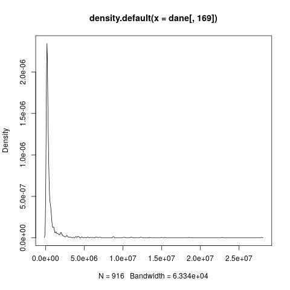
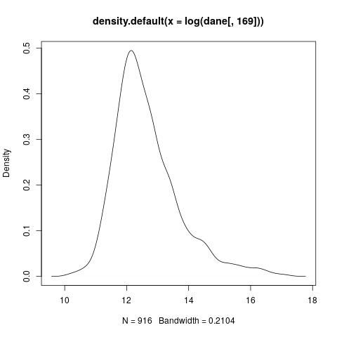

Table of Contents
- 1. Zadania
- 1.1. Read in the data.csv file and analyse the basic statistics of the v(n) or n = 24, 72, 168.
- 1.2. Plot the distribution of the v(168). How would you describe the distribution of the views?
- 1.3. Plot the distribution of the log transformed v(168). Does it ring a bell?
- 1.4. To improve the generalization and performance of your prediction algorithm, you can remove the so-called outliers from the dataset.
- 1.5. Compute correlation coefficients between the log-transformed v(n) for n = 1, 2, …, 24 and v(168).
- 1.6. Randomly split the dataset into training and test sets (10% of the dataset should be used for testing, rest for training).
- 1.7. Using training data, find linear regressor that minimizes Ordinary Least Squares (OLS) error function. It should take as the input v(n) and output v(168).
- 1.8. Extend the above linear regressor with multiple inputs, that is it for a given time n the
- 1.9. To evaluate the proposed predictors, compute mean Relative Squared Error (mRSE), that is defined as:
- 1.10. Plot the mRSE values for n ∈ (1, 24) computed on the test dataset.
1 Zadania
1.1 Read in the data.csv file and analyse the basic statistics of the v(n) or n = 24, 72, 168.
Załadowanie danych. Podstawowe statystyki:
dla n = 24
Min. 1st Qu. Median Mean 3rd Qu. Max. 21200 125000 194000 377000 327000 15300000
dla n = 72
Min. 1st Qu. Median Mean 3rd Qu. Max. 26200 148000 237000 613000 434000 22900000
dla n = 168
Min. 1st Qu. Median Mean 3rd Qu. Max. 27100 153000 252000 743000 522000 27900000
1.2 Plot the distribution of the v(168). How would you describe the distribution of the views?

Wniosek: Rozkład o dużym dodatnim współczynniki skośności.
1.3 Plot the distribution of the log transformed v(168). Does it ring a bell?

1.4 To improve the generalization and performance of your prediction algorithm, you can remove the so-called outliers from the dataset.
To that end, compute the mean value μ and standard deviation σ of the log transformed v(168). Remove from the dataset data for videos where v(168) does not fit within 3σ rule.
1.5 Compute correlation coefficients between the log-transformed v(n) for n = 1, 2, …, 24 and v(168).
1.6 Randomly split the dataset into training and test sets (10% of the dataset should be used for testing, rest for training).
1.7 Using training data, find linear regressor that minimizes Ordinary Least Squares (OLS) error function. It should take as the input v(n) and output v(168).
1.8 Extend the above linear regressor with multiple inputs, that is it for a given time n the
regressor should take an array of view counts preceding time n: {v(i)}ni=1
1.9 To evaluate the proposed predictors, compute mean Relative Squared Error (mRSE), that is defined as:
where v̂id (168) is the number of views of video id from a testing dataset T estimated bypredictor and vid (168) is a true recorded value.